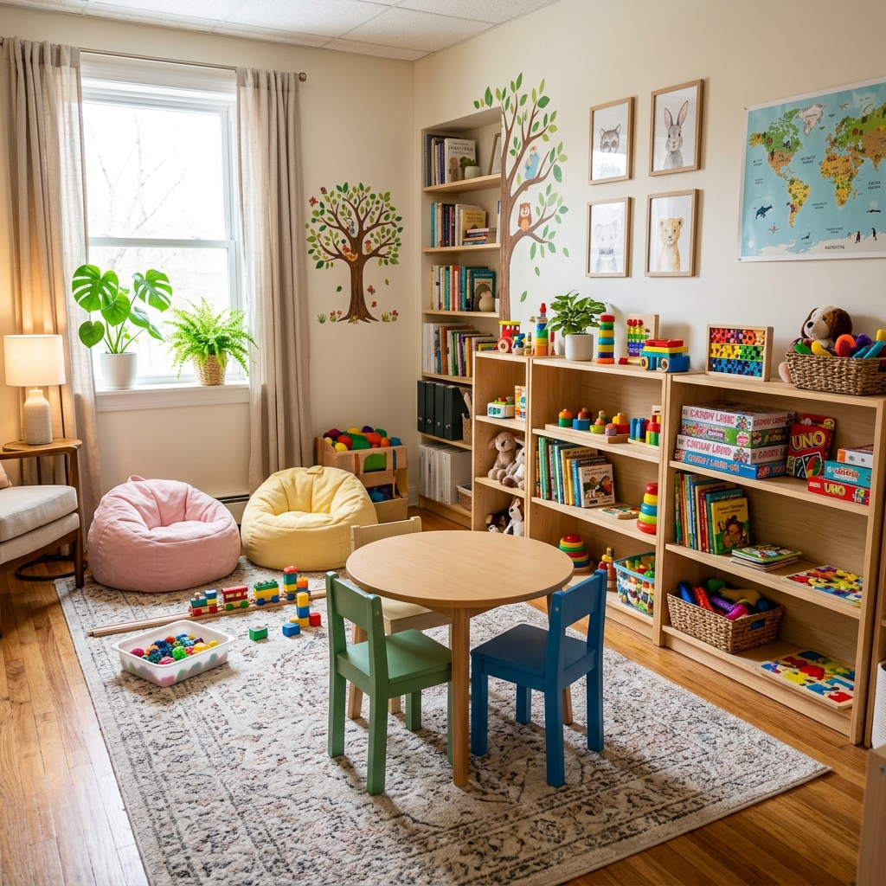
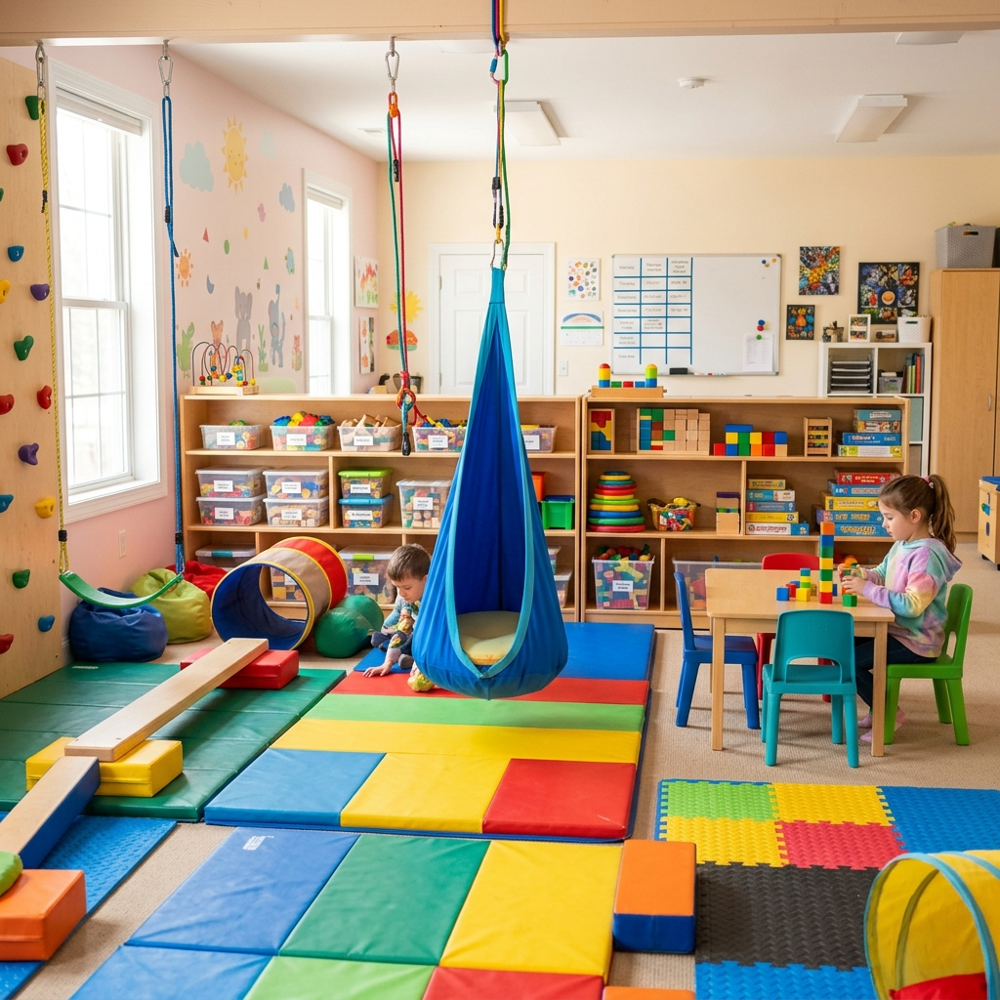

A infância é uma fase importante para o desenvolvimento emocional.
Se você busca apoio psicológico especializado para seu filho ou deseja entender mais sobre esse processo, entre em contato com a psicóloga Fabiana Lial e saiba como funciona a psicoterapia infantil e a intervenção personalizada.


Você nota algo diferente no seu filho?
Sinais como esses podem ser um pedido silencioso de ajuda:
-
Ansiedade: Tensão constante, medos exagerados e dificuldade para relaxar.
-
Estresse constante: Mudanças bruscas de humor, agitação ou irritabilidade frequente.
-
Isolamento ou timidez excessiva: Dificuldade para fazer amigos ou resistir a interações.
-
Alterações no sono ou na rotina alimentar: Pesadelos frequentes ou perda de apetite.
Como a Terapia Infantil pode ajudar seu filho
A terapia infantil oferece um espaço seguro para que as crianças se expressem, proporcionando assistência e segurança para que compreendam suas emoções e desenvolvam formas saudáveis de lidar com elas.
Desenvolvimento de recursos emocionais para a vida
Suporte para lidar com ansiedade e medos
Apoio emocional que pode refletir no sono e na rotina
Apoio emocional durante mudanças difíceis, como separação ou luto
Desenvolvimento de habilidades sociais e emocionais
Como eu cuido do seu filho e de você
Psicoterapia infantil & Intervenção ABA
Atendimento especializado para crianças na infância em desenvolvimento atípico ou típico (TEA, TDAH e regulação emocional). Com acolhimento, ludoterapia e intervenção baseada em evidências, cada criança desenvolve autonomia, expressão e bem-estar.
Orientação de pais
Ser pai ou mãe não vem com manual. Quando surgem dúvidas, conflitos ou inseguranças sobre o comportamento e desenvolvimento dos filhos, você encontra acolhimento, clareza e estratégias práticas para o dia a dia da sua família.
Fabiana Lial CRP 05/49334 - Mais que uma psicóloga, uma parceira acolhedora no desenvolvimento do seu filho.
Há mais de 10 anos acompanho crianças na infância em diferentes fases do desenvolvimento infantil, oferecendo um espaço seguro de escuta, acolhimento e desenvolvimento emocional.
Meu trabalho é fundamentado na Terapia Cognitivo-Comportamental (TCC) e práticas baseadas em evidências. Cada atendimento é conduzido de forma individualizada, respeitando a história, a individualidade e os objetivos de cada família.